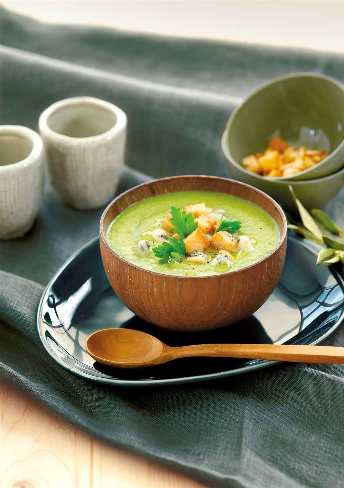

RECETAS CASERAS
Para más recetas 
ENSALADA CON NARANAJA, QUESO Y PISTACHOS

Empezamos con unas ensaladas para seguir con cremas, platos para mejorar la salud con huevos, pasta, carne,
verduras y pescados. ¡Ah! Y nos olvidamos de los postres. Esta ensalada con naranja, queso de cabra y pistachos,
estos aportan vitamina B1 y vitamina B6, riboflavina, vitamina E, vitamina K y ácido fólico. Si no tienes,
sustitúyelos por otro fruto seco.
INGREDIENTES: 4 PERSONAS / 20 MIN
- 200 g de escarola
- 50 g de rúcula (sustituye escarola y rúcula por la lechuga que tengas)
- 2 naranjas
- 300 g de rulo de queso de cabra (rebaja calorías con queso fresco)
- 50 g de pistachos
- 5 cucharadas de aceite de oliva virgen
- 1 cucharada de vinagre de jerez
- Sal
- Cebollino (opcional)
PREPARACIÓN:
- Trocea, lava y seca la escarola. Lava y seca la rúcula.
- Corta una naranja y media en gajos y retira la piel. Exprime la mitad restante para extraer el zumo.
- Lava, seca y pica el cebollino.
- Pela y pica los pistachos.
- Prepara la vinagreta mezclando cuatro cucharadas de aceite con el vinagre, dos cucharadas de zumo de
naranja, una pizca de sal y dos cucharadas de cebollino picado.
- Retira la corteza del rulo de queso de cabra, corta el queso en trozos, úntate las manos con aceite para
formar bolitas y rebózalas con los pistachos picados.
- Reparte los ingredientes en los platos y aliña con la vinagreta.

CREMA DE GUISANTES

Las cremas son perfectas para invierno y verano. Puedes aprovechar para hacer cremas saludables con las verduras
que tengas en el frigorífico. Los guisantes son una fuente de proteína vegetal y numerosos minerales y previenen
las enfermedades del corazón gracias a su contenido en luteína, que reduce colesterol. ¡Cuídate con una buena
crema de guisantes!
INGREDIENTES: 4 PERSONAS / 40 MIN
- 600g de guisantes
- 2 patatas
- 2 puerros
- 30g de mantequilla
- 100g de gorgonzola
- 2 rebanadas de pan de hogaza
- 2 cucharadas de piñones
- 2 cucharadas de aceite de oliva
- Perejil
- Sal y pimienta
PREPARACIÓN:
- Pela las patatas y córtalas a rodajas.
- Limpia los puerros y córtalos en discos.
- Corta el pan a daditos y tuéstalo en el horno, 10 min a 180 ° (opcional).
- Tuesta los piñones en una sartén, a fuego suave.
- Calienta la mantequilla en una olla y añade el puerro. Póchalo a fuego suave durante 10 min. Luego, añade la
patata y los guisantes, cúbrelos con 1 litro de agua, tápalos y cuécelos 20 min.
- Salpimenta y tritura.
- Sirve la crema bien caliente, acompañada del pan, los piñones, el gorgonzola a dados y un chorrito de aceite
de oliva.
PASTA CON JAMÓN, ESPÁRRAGOS Y ALCACHOFAS
Los espárragos verdes tienen muy pocas calorías y aportan mucha fibra, también vitaminas, sobre todo A, B1, B2,
B6, C y E; y minerales (magnesio, fósforo, calcio y potasio). Y las alcachofas contienen fósforo, hierro,
magnesio, calcio, potasio y vitaminas (B1, C y niacina, un tipo de vitamina B).
INGREDIENTES: 4 PERSONAS / 55 MIN
- Espárragos verdes
- Pasta corta
- 1 limón
- Alcachofas
- Jamón serrano (puedes sustituir por fiambre de pavo)
- Almendras
- Ajo
- Perejil
- Sal y aceite
PREPARACIÓN:
- Limpia, lava y corta en gajos 4 alcachofas. Cuécelas en agua salada y con el zumo de limón, 10 min.
- Cuece 350 g de pasta en agua salada, hasta que esté al dente. Escúrrela.
- Limpia un manojo de espárragos, lávalos y saltéalos 2 min en un fondo de aceite.
- Mezcla el ajo pelado y picado con 20 g de almendras y las alcachofas escurridas.
- Sazona, añade la pasta y sirve con unas lonchas de jamón y perejil.
POLLO MIEL MOSTAZA CON CREMA CEBOLLA GRIL
Consiente a tu familia con este delicioso y jugoso pollo con salsa de miel y mostaza. Es una receta fácil y
rápida, a tu familia le fascinará.
INGREDIENTES: 2 PERSONAS / 45 MIN
- 2 pechugas de pollo
- 2 cdas aceite
- 1/2 taza miel
- 1/2 taza mostaza
- 2 tazas de arvejas
- 1/4 taza de mantequilla
- 180 grs Crema para Cocinar Cebolla Grille
- 2 tajadas jamón
- 1 cucharada de perejil
- Sal
- Pimienta
PREPARACIÓN:
- Toma las pechugas de pollo, retirarles la piel y sécalas con papel de cocina.
- En un recipiente pon la pechuga de pollo y mezcla la mostaza, la miel y la sal. Tápalo con papel film y
llévalo a la
nevera por 1 hora.
- En una olla pequeña pon la mantequilla a derretir, vierte las arvejas y sofríe por 1 minuto. Agrega 1 taza
de agua,
tapa y cocina a fuego medio durante 25 a 30 minutos.
- Destapa la olla, retira el agua restante y añade la crema para cocinar Cebolla Grille. Agrega el jamón
cortado en
cubos y salpimienta al gusto.
- En una plancha de cocina o sartén caliente, vierte un poco de aceite, dejar calentar y cocina las pechugas
durante 3
minutos por cada lado según el grosor.
- Tras finalizar la cocción, corta las pechugas en rodajas gruesas y sírvelas sobre una cama de arvejas en
crema.
Añade el perejil para decorar.